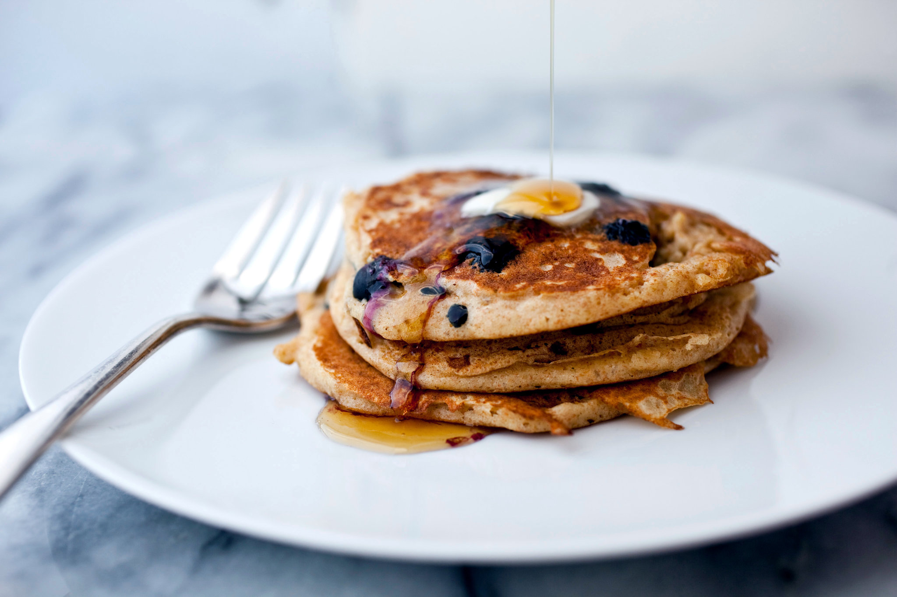

Buttermilk Oatmeal Pancakes

Description
Delicious pancakes that are
a great way to start the day!
Prep: 10 mins
Cook: 15 mins
Total: 25 mins
Servings: 4
Yield: 4 servings
Ingredients
- 2 cups buttermilk
- 1 ½ cups rulled oats
- ½ cup all-purpose flour
- ½ cup cornmeal
- 2 teaspoons baking powder
- 1 ½ teaspoons white sugar
- ½ teaspoon baking soda
- ½ teaspoon salt
- 2 eggs, beaten
- ¼ cup vegetable oil
Steps
-
Mix buttermilk and oats in a large bowl;
allow to rest about 5 minutes
-
Stir flour, cornmeal, baking powder, sugar,
baking soda, and salt into oat mixture.
-
Add eggs and vegetable oil; mix
until just combined.
-
Heat a lightly oiled griddle over medium-high
heat.
-
Drop batter by large spoonfuls onto the griddle;
cook until bubbles form and the edges are dry,
about 3 minutes.
-
Flip and cook until
browned on the other side, about 3 minutes
more.
-
Repeat with remaining batter.